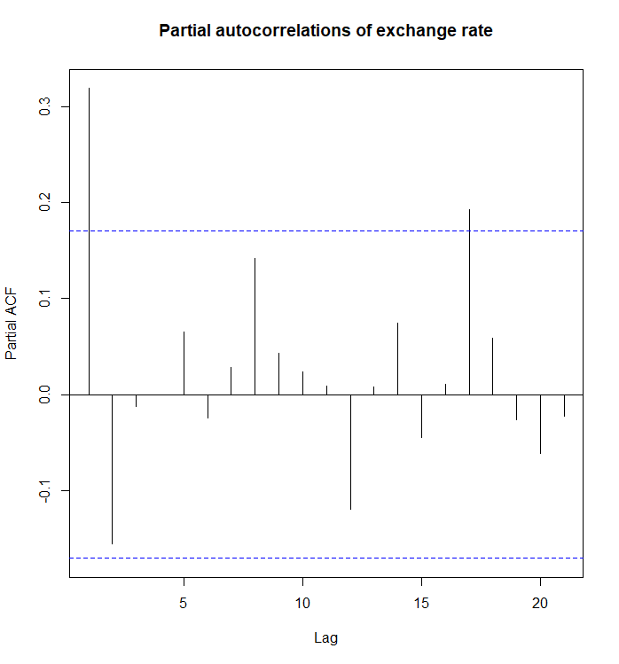
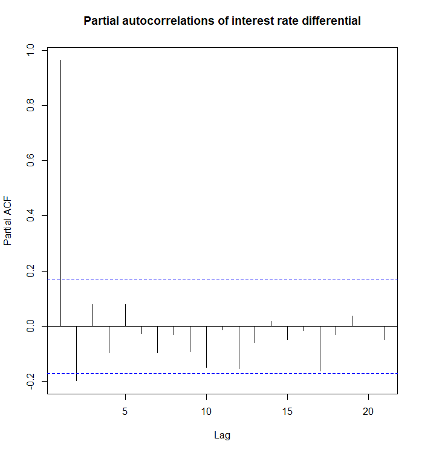
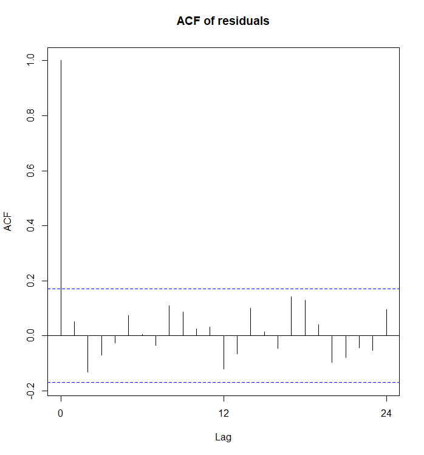
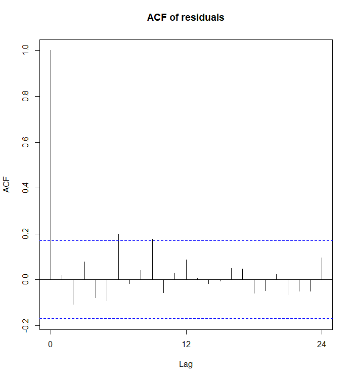
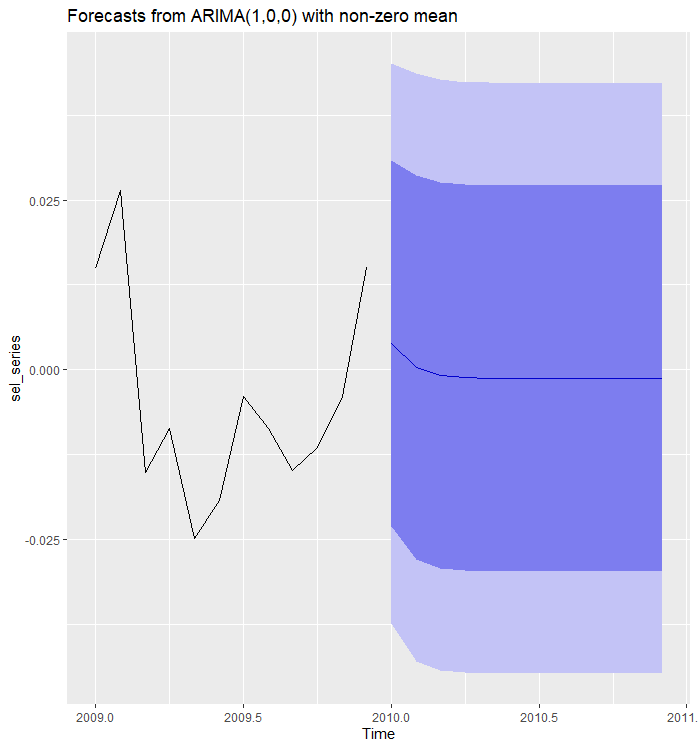
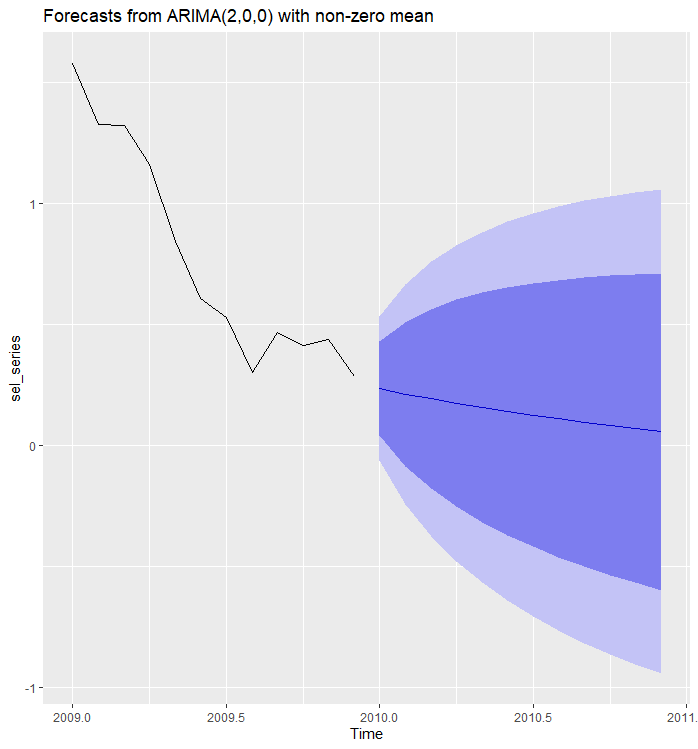

4 Univariate time series processes and models
In this chapter, we briefly introduce and review univariate time series models. We will concentrate on the autoregressive (AR) models, but more general ARMA models will be also briefly discussed.
- Notice that ‘’process’’ and ‘’model’’ are often used interchangeably. The term ’‘process’’ emphasizes that a time series is a realization of the underlying (stochastic) process, whereas ’‘model’’ emphasizes the specific statistical specification selected for the observed data.
A more extensive description of the univariate models is provided in the Time Series Econometrics:
4.1 Autoregressive process
At a general level, the structure of a (univariate) time series \(y_t\) can be thought of as consisting of two (additive) parts: a systematic part (‘’predictable’’ or ‘’structural’’ part or ``skeleton’’) and an unpredictable part.
An autoregressive process (model) of order \(p\), AR(\(p\)) process, is defined by the equation \[\begin{equation*} y_{t}= \nu + \phi_1 y_{t-1}+\cdots+\phi_p y_{t-p}+u_{t}, \quad u_{t} \sim \mathsf{iid}(0,\sigma^2). \end{equation*}\] That is, the observation \(y_{t}\) is explained by its own lags \(y_{t-1},\ldots,y_{t-p}\) and the constant term \(\nu\) (cf. a linear regression model). Additionally, \(u_{t}\) is a zero mean error term. In the following, this assumption is strengthened (unless otherwise stated) so that \(u_{t} \sim \mathsf{iid}(0,\sigma^2)\) and occasionally \(u_{t} \sim \mathrm{nid}(0,\sigma^2)\), that is assuming normality of the error term.
- In this material, the process/model is written with the constant term \(\nu\). In an alternative notation, the process \(y_t\) will be demeaned around the mean, that is \(y_t-\mu\), where \(\mathsf{E}(y_{t}) = \mu\), indicating a demeaned (centered) process without the constant term: \[\begin{equation*} (y_{t} -\mu)= \phi_1 (y_{t-1}-\mu) + \cdots+ \phi_p (y_{t-p}-\mu) + u_{t}, \quad u_{t} \sim \mathsf{iid}(0,\sigma^2). \end{equation*}\]
Stationarity. For the process defined in this way to be stationary, or even well-defined for all \(t=0,\pm 1,\ldots,\) conditions must be imposed on the coefficients \(\phi_1,\ldots,\phi_p\). In the case of \(p=1\), that is when considering an AR(1) process, we specify \(\left\vert\phi_1\right\vert <1\). Then \[\begin{eqnarray*} y_{t} & = & \nu + \phi_1 y_{t-1} + u_{t} \\ &=& \nu + \phi_1 \nu + u_{t}+\phi_1 u_{t-1}+\phi_1^2 y_{t-2} \\ & \vdots & \\ &=& \nu \sum_{j=0}^k\phi_1^j + \sum_{j=0}^k\phi_1^j u_{t-j}+\phi_1^{k+1} y_{t-k-1}, \end{eqnarray*}\] which leads to the representation (given \(\left\vert\phi_1\right\vert <1\)) \[\begin{equation*} y_{t} = \nu \sum_{j=0}^\infty \phi_1^j + \sum_{j=0}^{\infty}\phi_1^j u_{t-j}. \end{equation*}\] Since \(u_{t}\) is strictly (strongly) stationary, the equation above shows that the same applies to the process \(y_t\) under the condition \(\left\vert\phi_1\right\vert <1\). Weak stationarity also holds. To see this, let us compute the expectation \[\begin{eqnarray*} \mathsf{E}(y_{t}) & \equiv & \mu \\ &=& \mathsf{E}\left(\nu \sum_{j=0}^\infty \phi_1^j +\sum_{j=0}^{\infty}\phi_1^j u_{t-j}\right) \\ &=& \nu \sum_{j=0}^\infty \phi_1^j + \sum_{j=0}^{\infty}\phi_1^j \mathsf{E}(u_{t-j})\\ &=& \nu \sum_{j=0}^\infty \phi_1^j \\ &=& \nu / (1- \phi_1) <\infty, \end{eqnarray*}\] and variance \[\begin{equation*} \mathsf{Var}(y_{t}) \stackrel{ \perp \! \! \! \! \! \perp }{=} \sum_{j=0}^{\infty}\mathsf{Var}(\phi_1^j u_{t-j}) = \sum_{j=0}^{\infty} \phi_1^{2j} \mathsf{Var}(u_{t-j}) =\frac{\sigma^2}{1-\phi_1^2}<\infty. \end{equation*}\] We can also notice that \(u_{t} \perp \! \! \! \perp y_{t-h}\), \(h>0\), from which it follows \(\mathsf{E}(u_t(y_{t-h}-\mu))=0\), and \[\begin{equation*} \mathsf{E}\Big((y_{t}-\mu) (y_{t-h}-\mu)\Big) = \phi_1 \mathsf{E}\Big((y_{t-1}-\mu) (y_{t-h}-\mu)\Big), \end{equation*}\] and therefore autocorrelation coefficients (see the definition in Section 2) in this special case of \(p=1\) follow a recursion \[\begin{equation*} \rho_h = \phi_1 \rho_{h-1},\quad h=1,2,\ldots. \end{equation*}\] Since \(\rho_0=1\), the solution to the AR(1) process is \[\begin{equation*} \rho_h = \phi_1^h,\quad h=0,1,2,\ldots, \end{equation*}\] from which it is seen that \(\rho_h \longrightarrow 0\) geometrically as \(h \longrightarrow \infty\). The fact that mean and autocovariances (autocorrelations) are not dependent on time confirms weak stationarity of an AR(1) process.
Stationarity of the AR(\(p\)) process. Now, let us return to the general AR(\(p\)) case and introduce the lag (backshift) operator \(\mathsf{B}\), which has the properties \[\begin{equation*} \mathsf{B}^1 x_t= x_{t-1}, \quad \mathsf{B}^k x_t=x_{t-k} \quad \mathrm{and} \quad \mathsf{B}^0=1, \end{equation*}\] where, in general, \(x_t\) can be scalar or vector-valued process. Then the AR(\(p\)) process can be written as \[\begin{equation*} \phi(\mathsf{B}) y_{t} = \nu + u_{t}, \end{equation*}\] where \(\phi(\mathsf{B}) = 1 - \phi_1 \mathsf{B} -\cdots- \phi_p \mathsf{B}^p\).
A sufficient condition for the stationarity of an AR(\(p\)) process. A sufficient condition for the stationarity of the AR(\(p\)) process is that the roots of the polynomial (characteristic equation) \(\phi\left(z\right)\) \(\left(z\in \mathbb{C}\right)\) lie outside the unit circle/disk in the complex plane, or equivalently \[\begin{equation*} \phi\left(z\right)\neq 0 \,\, \mathrm{for}\,\, \left\vert z\right\vert \leq1. \end{equation*}\]
As an example, in the stationary AR(1) case (\(|\phi_1| < 1)\), the characteristic equation yields \(\phi(z)=0 \Leftrightarrow 1-\phi _{1}z = 0\) when \(|z| > 1\). This shows why in the case \(p=1\), the condition \(\left\vert \phi_{1}\right\vert<1\) was found sufficient to ensure the existence of a (causal) stationary MA(\(\infty\))–representation.
Notice that the resulting roots can also be complex numbers. Related to the above stationarity condition, the absolute value or norm of a complex number \(z=x+iy\) \(\left(i=\sqrt{-1}\right)\) is defined as \(\left\vert z\right\vert=\sqrt{x^{2}+y^{2}}\).
This stationarity condition is not necessary. However, in what follows, we will focus on causal processes only, and in this case this stationarity condition is also a necessary condition.
Based on the above-mentioned, a (causal) stationary AR(\(p\)) process have a (causal) MA\(\left(\infty\right)\) representation \[\begin{equation*} y_{t} = \phi\left(\mathsf{B}\right)^{-1}\nu + \phi\left(\mathsf{B}\right)^{-1}u_{t} = \phi\left(1\right)^{-1}\nu + \psi\left(\mathsf{B}\right)u_{t} = \mu + \sum_{j=0}^{\infty}\psi_{j}u_{t-j}, \end{equation*}\] where \(\psi\left(\mathsf{B}\right) =\sum_{j=0}^{\infty}\psi_{j}\mathsf{B}^{j}=\phi\left(\mathsf{B}\right)^{-1}\) and \(\mu = \phi\left(1\right)^{-1}\nu\). The coefficients \(\psi_{j}\) can be solved as a function of the parameters \(\phi_{1},\ldots,\phi_{p}\) from equation \[\begin{equation*} \left(1-\phi_{1}\mathsf{B}-\cdots-\phi_{p}\mathsf{B}^{p}\right) \left(\psi_{0}+\psi_{1}\mathsf{B}+\psi_{2}\mathsf{B}^{2}+\cdots \right)=1 \end{equation*}\] by interpreting the right hand side as a power series in \(\mathsf{B}\), and setting the coefficients of \(\mathsf{B}^{j}\) equal to each other on both sides of the equation.
Recall that two polynomials are the same if their coefficients are the same.
For instance, the coefficient of \(\mathsf{B}^{0}\) is 1, so that \(\psi_{0}=1\). Next, the coefficient of \(\mathsf{B}^{1}\) is zero, so that \(\psi_{1}-\phi_{1}\psi_{0}=0\) from which \(\psi_{1}=\phi_{1}\) follows. The general solution is left as an exercise.
Autocorrelation function. The autocorrelation function of an AR(\(p\)) process could be derived by making use of its MA\(\left(\infty\right)\) representation. Instead, we present an often used and rather practical alternative approach based on the model equation.
Multiplying both sides of the AR(\(p\)) process with \(y_{t-h}-\mu\) \(\left(h\geq0\right)\) and taking expectations, we obtain \[\begin{equation*} \mathsf{E}\Big((y_{t}-\mu) (y_{t-h}-\mu)\Big) = \phi_{1}\mathsf{E}\Big((y_{t-1}-\mu) (y_{t-h}-\mu)\Big) +\cdots+ \phi_{p}\mathsf{E}\Big((y_{t-p}-\mu) (y_{t-h}-\mu)\Big) +\mathsf{E}\left(u_{t} (y_{t-h}-\mu)\right). \end{equation*}\] Because \(y_{t-h}\) is a linear function of the innovation terms \(u_{t-h}\), \(u_{t-h-1},\ldots\), the variables \(y_{t-h}\) and \(u_{t}\) are independent when \(h>0\). Therefore, we get
\(\mathsf{E}\left(u_{t}(y_{t-h}-\mu)\right)=0 \, \, (h>0)\)
For \(h=0\), it can be seen that \(\mathsf{E}\left(u_{t} (y_{t}-\mu) \right)=\mathsf{E}\left(u_{t}^{2}\right)=\sigma^{2}\).
As \(\gamma_{h}=\gamma_{-h}\), we get \[\begin{equation*} \gamma_{h}=\left\{ \begin{array} [c]{l} \phi_{1}\gamma_{1}+\cdots+\phi_{p}\gamma_{p}+\sigma^{2},\,\, h=0, \\ \phi_{1}\gamma_{h-1}+\cdots+\phi_{p}\gamma_{h-p},\,\, h > 0. \end{array} \right. \end{equation*}\] Dividing this (in the case \(h>0\)) with the variance \(\gamma_{0}\) leads to \[\begin{equation*} \rho_{h}=\phi_{1}\rho_{h-1}+\cdots+\phi_{p}\rho_{h-p},\,\, h>0, \end{equation*}\] so that the autocorrelation function of an AR(\(p\)) process satisfies a difference equation similar to the one the AR(\(p\)) process itself satisfies.
When the roots of \(\phi\left(z\right)\) lie outside the unit disk on the complex plane, the solution \(\rho_{h}\) to this difference equation decays exponentially to zero as the lag length \(h\) increases.
The solution \(\phi_{1}^{h}\) for the AR(1) is an example of this (this solution can also be easily obtained by solving the difference equation in the case \(p=1\) using the initial value \(\rho_{0}=1\)).
Partial autocorrelation function. We next define the partial autocorrelation function, which is, among other things, a useful tool for model selection in univariate time series analysis. In general, \(\alpha_{h}\) equals the conventional partial correlation coefficient that measures the correlation between the random variables \(y_{t}\) and \(y_{t-h}\) when the linear effect of the random variables \(y_{t-1}, \ldots, y_{t-h+1}\) has been first eliminated.
- Therefore, a particular consequence is that \(\left\vert \alpha_{h}\right\vert\leq1\).
In the case of an AR(\(p\)) process, the partial autocorrelation function \(\alpha_{h}\) has a special useful feature. For \(m>p\), an AR(\(p\)) process can be interpreted as an AR(\(m\)) process with \(\phi_{p+1}=\cdots=\phi_{m}=0\), which makes it clear that the partial autocorrelation function of an AR(\(p\)) process satisfies (also \(\alpha_0=1\)): \[\begin{equation*} y_{t} \thicksim \mathrm{AR}(p) \Rightarrow \alpha_{p} = \phi_p \quad \mathrm{and} \quad \alpha_{h}=0 \,\, \mathrm{for}\,\, h > p. \end{equation*}\] In other words, the partial autocorrelation function of an AR(\(p\)) process drops to zero after lag \(p\) (assuming \(\phi_p \neq 0\)).
The (sample) partial autocorrelation function can generally be based on so called Yule-Walker equations.
The sample counterpart of the (population) partial autocorrelation function, sample partial autocorrelation function (cf. the sample autocorrelation function defined in Section 2) is obtained by using sample autocovariances \(c_{h}\).
An important detail is that if an observed time series has been generated by an AR(\(p\)) process, its estimated autocorrelation function should decay to zero as the lag length increases with no apparent breaks, whereas the estimated partial autocorrelation function should have a visible break after lag \(p\). These features can be made use of when judging whether an AR(\(p\)) process would be a good choice for an observed time series.
To identify the location of the break point in the estimated partial autocorrelation function, one can make use of the following result. In the case of an AR(\(p\)) process, the estimators \(\widehat{\alpha}_{h}\), \(h>p\), are approximately independent with \(\mathsf{N}\left(0,T^{-1}\right)\)–distribution. Therefore, \[\begin{equation*} \mathsf{P}(\left\vert \widehat{\alpha}_{h}\right\vert \geq1.96/\sqrt{T})\approx0.05 \end{equation*}\] when \(h>p\). On the other hand, because the estimators \(\mathsf{c}_{1},\ldots,\mathsf{c}_{p}\) are consistent, the estimator \(\widehat{\alpha}_{p}\) converges in probability to the value of the theoretical partial autocorrelation coefficient \(\alpha_{p}\) which for an AR(\(p\)) process is nonzero. Therefore, for \(h=p\), \(\mathsf{P}(\left\vert \widehat{\alpha}_{h}\right\vert \geq1.96/\sqrt{T})\) approaches one as the sample size increases.
These remarks justify depicting the sample partial autocorrelation coefficients similar to that of the usual sample autocorrelation coefficients, and adding to it horizontal critical/confidence bands to make its interpretation easier.
4.2 ARMA processes
Already above we have seen that when the AR(\(p\)) process is stationary, it also has the following univariate (causal) linear process \[\begin{equation*} y_{t} = \mu + \sum_{j=0}^{\infty}\psi_j u_{t-j}, \quad u_{t} \sim \mathsf{iid}(0,\sigma^2), \end{equation*}\] where \(\psi_0=1\) and coefficients \(\psi_j\) are functions of the AR parameters, and \[\begin{equation*} \sum_{j=0}^{\infty}\psi_j^2<\infty. \end{equation*}\] As the process \(\left\{u_{t}\right\}\) is (strictly) stationary, so is the process \(\left\{ y_{t}\right\}\).
A linear process can be defined more generally by allowing \(j<0\). This type of linear process is called non-causal. Non-causal models won’t be considered in this course.
As two special cases (cf. and in addition to the AR(\(p\) process) of the linear process, we consider MA(\(q\)) and ARMA(\(p\),\(q\)) processes.
MA(\(q\)) process. The MA(\(q\)) process is defined as \[\begin{equation*} y_{t}= \mu + u_{t}+\theta_{1}u_{t-1}+\cdots+\theta_{q}u_{t-q}, \quad u_{t}\sim\mathsf{iid}\left(0,\sigma^{2}\right), \end{equation*}\] or alternatively using the lag operator as \[\begin{equation*} y_{t} = \mu + \theta\left(\mathsf{B}\right)u_{t},\,\, u_{t}\sim\mathsf{iid}\left(0,\sigma^{2}\right) \end{equation*}\] with the lag-polynomial \(\theta\left(\mathsf{B}\right)=1+\theta_{1} \mathsf{B} +\cdots+\theta_{q} \mathsf{B}^{q}\). Therefore, the current value of the process is assumed to depend linearly on the present and \(q\) last unobservable random shocks (or error terms or innovations). Because an MA(\(q\)) process is a special case of the (causal) linear process, it is always (both weakly and strictly) stationary. Moreover, we get
\(\mathsf{E}\left( y_{t}\right)=\mu\),
\(\mathsf{Var}\left( y_{t}\right) =\gamma _{0}=\left( 1+\theta _{1}^{2}+\cdots +\theta _{q}^{2}\right) \sigma^{2}\).
Autocorrelation function. By making use of the general results for linear process, the MA(\(q\)) process has the autocovariance function given by \[\begin{equation*} \gamma_{h}= \begin{cases} \sigma^{2}\sum_{j=0}^{q-h}\theta_{j}\theta_{j+h}, & \text{for } \, 0\leq h\leq q,\\ 0, & \text{for } \, h>q, \end{cases} \end{equation*}\] where \(\theta_0=1\). The autocorrelation function is then obtained via the above-mentioned and discussed formula \(\rho_{h}=\gamma_{h}\gamma_{0}\). Therefore, the autocorrelation function of an MA(\(q\)) process drops to zero after lag \(q\) (assuming that \(\theta_{q}\neq0\)). If one observes a similar feature in a sample autocorrelation function, one can consider an MA(\(q\)) process as a good candidate to model the time series.
When considering the suitability of an MA(\(q\)) process, one can make use of the following result: In the case of an MA(\(q\)) process, the estimators \(\mathsf{r}_{h}\), \(h>q\), are approximately normally distributed with mean zero and variance \(\left(1+2\rho_{1}^{2}+\cdots+2\rho_{q}^{2}\right)/T\). Therefore, if one wants to test at the 5% significance level whether an individual autocorrelation coefficient is different from zero, the estimates \(\mathsf{r}_{h}\), \(h>q\), should be compared with the critical bounds \[\begin{equation*} \pm1.96\sqrt{\mathsf{\widehat{w}}_{q}/T}, \quad \mathsf{\widehat{w}}_{q}=\left(1+2\mathsf{r}_{1}^{2}+\cdots+2\mathsf{r}_{q}^{2}\right). \end{equation*}\] In this case, \(\mathsf{P}(\left\vert \mathsf{r}_{h}\right\vert \geq1.96\sqrt{\mathsf{\widehat{w}}_{q}/T})\approx0.05\). Note also that the bounds above are wider than in the case \(y_{t}\sim\mathsf{iid}\left(0,\sigma^{2}\right)\) when \(\mathsf{\widehat{w}}_{q}\) is replaced by \(1\).
Invertibility. It can be shown that for the (causal) AR(\(p\)) process, there exists a one to one correspondence between the parameters \(\boldsymbol{\phi}=(\phi_1,\ldots,\phi_p)\) and \(\sigma^{2}\), and the autocovariance function.
For an MA(\(q\)) process, a similar result does not hold. To see this, consider as an example the MA(1) process for which it holds that (assume that \(\theta_1\neq0\)) \[\begin{equation*} \gamma_{0}=\sigma^{2}\left(1+\theta_1^{2}\right)=\sigma^{2}\theta_1^{2}\left(1+1/\theta_1^{2}\right) \quad \mathrm{and} \quad \gamma_{1}=\sigma^{2}\theta_1=\theta_1^{2}\sigma^{2}\left(1/\theta_1\right). \end{equation*}\] Define \(\theta_1^{\ast}=1/\theta_1\) and \(\sigma_{\ast}^{2}=\theta_1^{2}\sigma^{2}\), so that \(u_{t}^{\ast}=\theta_1u_{t}\sim\mathsf{iid}\left(0,\sigma_{\ast}^{2}\right)\). Now, it can be seen that the two MA(1) processes \(y_{t} = \mu + u_{t}+\theta_1u_{t-1}\) and \(y_{t}^{\ast} = \mu + u_{t}^{\ast}+\theta_1^{\ast}u_{t-1}^{\ast}\) have exactly the same autocovariance function, so that they cannot be distinguished from each other based on autocovariances. If in addition \(u_{t}\sim\mathsf{nid}\left( 0,\sigma^{2}\right)\), the entire probability structures of these two processes are indistinguishable.
A consequence is that estimating the parameters based on an observed time series, unless one “tells” the method which of the parameter combinations \(\left(\theta_1,\sigma^{2}\right)\) and \(\left(\theta_1^{\ast},\sigma_{\ast}^{2}\right)\) (that fit the data equally well), should be chosen.
The typical solution to the above problem in the MA(\(1\)) process is to set the condition \(\left\vert \theta_1\right\vert <1\). Then, one can use the equation \(u_{t}=y_{t}-\mu - \theta_1 u_{t-1}\) and repetitive substitutions to first obtain \(u_{t}=y_{t}-\mu -\theta_1 (y_{t-1}-\mu) +\theta_1^{2}u_{t-2}\), and eventually \[\begin{equation*} (y_{t}-\mu)=-\sum_{j=1}^{k}\left(-\theta_1\right)^{j}(y_{t-j}-\mu)-\left(-\theta_1\right)^{k+1}u_{t-k-1}+u_{t}. \end{equation*}\] The condition \(\left\vert \theta_1\right\vert <1\) ensures that the summation on the right hand side converges in mean square and therefore we obtain the representation \[\begin{equation*} y_{t}=-\sum_{j=1}^{\infty}\left(-\theta_1\right)^{j}y_{t-j}+u_{t}. \end{equation*}\] That is, when \(\left\vert \theta_1 \right\vert<1\) holds, an MA(1) process can be “inverted” to an AR\(\left(\infty\right)\) process, which explains why in the case \(\left\vert \theta_1\right\vert<1\) an MA(1) process is called invertible.
Invertibility condition of an MA(\(q\)) process . An MA(\(q\)) process, including the above case \(q=1\), is invertible, if the roots of the polynomial \(\theta\left(z\right)\) \(\left(z\in\mathbb{C}\right)\) lie outside the unit circle/disk on the complex plane or, equivalently, if \[\begin{equation*} \theta\left(z\right) \neq0 \,\,\, \mathrm{for} \,\,\, \left\vert z\right\vert\leq1. \end{equation*}\]
When the invertibility condition holds, one can formally solve \(u_{t}\) from equation \((y_{t}-\mu)=\theta\left(\mathsf{B}\right)u_{t}\) by dividing both sides by the polynomial \(\theta\left(\mathsf{B}\right)^{-1}\). The solution is \[\begin{equation*} \pi\left(\mathsf{B}\right)(y_{t}-\mu) = u_{t} \quad \mathrm{or} \quad \sum_{j=0}^{\infty}\pi_{j}(y_{t-j}-\mu)=u_{t}, \end{equation*}\] where \(\pi\left(\mathsf{B}\right)=\sum_{j=0}^{\infty}\pi_{j}\mathsf{B}^{j}=\theta\left(\mathsf{B}\right)^{-1}\) and the coefficients \(\pi_{j}\) can be solved as a function of the parameters \(\theta_{1},\ldots,\theta_{q}\) from the equation \[\begin{equation*} \left(1+\theta_{1}\mathsf{B}+\cdots+\theta_{q} \mathsf{B}^{q}\right) \left(\pi_{0}+\pi_{1}\mathsf{B}+\pi_{2}\mathsf{B}^{2}+\cdots\right)=1 \end{equation*}\] by interpreting the right hand side as a power series in \(\mathsf{B}\), setting the coefficients of \(\mathsf{B}^{j}\) equal on both sides of the equation (and \(\pi_{0}=1\)).
The general definition of a partial autocorrelation function (PACF) can also be applied in the case of an MA(\(q\)) process, but the calculations involved would become rather complicated. However, because an MA(\(q\)) process has (due to invertibility and assuming here \(\theta_{q}\neq0\)) an AR(\(\infty\)) representation (see above), and based on what was said above about the partial autocorrelation function of an AR(\(p\)) process, it is intuitively clear that the partial autocorrelation function of an MA(\(q\)) process does not drop to zero at any point, but rather smoothly decays towards zero.
ARMA(\(p,q\)) process process can be characterized as a combination of AR(\(p\)) and MA(\(q\)) processes \[\begin{equation*} y_{t} = \nu + \phi_{1}y_{t-1}+\cdots+\phi_{p}y_{t-p}+u_{t}+\theta_{1}u_{t-1}+\cdots+\theta_{q}u_{t-q}, \end{equation*}\] where \(u_{t}\sim\mathsf{iid}\left(0,\sigma^{2}\right)\). Unlike the AR(\(p\)) process, the error term is now (generally) not an independent random shock, but instead an autocorrelated MA(\(q\)) process.
Using the lag operator and the lag-polynomials \(\phi\left(\mathsf{B}\right)=1-\phi_{1}\mathsf{B}-\cdots-\phi_{p}\mathsf{B}^{p}\) and \(\theta\left(\mathsf{B}\right)=1+\theta_{1}\mathsf{B} + \cdots + \theta_{q} \mathsf{B}^{q}\), the ARMA(\(p\),\(q\)) process can be expressed as \[\begin{equation*} \phi\left(\mathsf{B}\right)y_{t} = \nu + \theta\left(\mathsf{B}\right)u_{t}. \end{equation*}\]
If \(\theta\left(\mathsf{B}\right)=1\) (that is, \(q=0\)), one obtains the AR(\(p\)) process as a special case.
If \(\phi\left(\mathsf{B}\right)=1\) (that is, \(p=0\)), one obtains the MA(\(q\)) process.
Stationarity and invertibility. Based on what was said for linear process, it is clear than an ARMA(\(p\),\(q\)) process has a well-defined (causal) MA(\(\infty\)) representation if the polynomial \(\phi\left(z\right)\) satisfies the sufficient stationarity condition of an AR(\(p\)) process (apply what was said in the case of an AR(\(p\)) process, but now with MA(\(q\)) error term).
- A sufficient condition for the stationarity of an ARMA(\(p,q\)) process is that the roots of the polynomial \(\phi\left(z\right)\) \(\left(z\in\mathbb{C}\right)\) lie outside the unit circle/disk on the complex plane, or equivalently that \[\begin{equation*} \phi\left( z\right) \neq0 \,\,\, \mathrm{for} \,\,\, \left\vert z\right\vert \leq1. \end{equation*}\]
Based on the above discussion, the invertibility condition of an MA(\(q\)) process will also suffice to ensure the invertibility of an ARMA(\(p\),\(q\)) process \[\begin{equation*} \theta\left(z\right)\neq0 \,\,\, \mathrm{for} \,\,\, \left\vert z\right\vert \leq1. \end{equation*}\]
Furthermore, as can be deduced from what was discussed above, when the stationarity condition holds, an ARMA(\(p\),\(q\)) process has an MA\(\left(\infty\right)\) representation (cf. the AR(\(p\)) case) \[\begin{equation*} (y_{t}-\mu)=\frac{\theta\left(\mathsf{B}\right)}{\phi\left(\mathsf{B}\right)}u_{t}=\psi\left(\mathsf{B}\right)u_{t}, \end{equation*}\] where \(\psi\left(\mathsf{B}\right)=\sum_{j=0}^{\infty}\psi_{j}\mathsf{B}^{j}=\theta\left(\mathsf{B}\right)\phi\left(\mathsf{B}\right)^{-1}\) and the coefficients \(\psi_{j}\) can be solved as a function of the parameters \(\phi_{1},\ldots,\phi_{p}\) and \(\theta_{1},\ldots,\theta_{q}\) by equating the coefficients of \(\mathsf{B}^{j}\) on both sides of the equation \[\begin{equation*} \left(1-\phi_{1}\mathsf{B}-\cdots-\phi_{p}\mathsf{B}^{p}\right)\left(\psi_{0}+\psi_{1}\mathsf{B}+\psi_{2}\mathsf{B}^{2}+\cdots\right)=1+\theta_{1}\mathsf{B}+\cdots+\theta_{p}\mathsf{B}^{q}. \end{equation*}\]
- From this equation, it can be solved that \(\psi_{0}=1\), \(\theta_{1}=\psi_{1}-\psi_{0}\phi_{1}\), and in general, \[\begin{equation*} \psi_{j}=\sum_{i=1}^{p}\phi_{i}\psi_{j-i}+\theta_{j}, \,\, j=0,1,2,\ldots, \end{equation*}\] where \(\theta_{0}=1,\) \(\theta_{j}=0\), \(j>q\), and \(\psi_{j}=0\), \(j<0\).
On the other hand, when the invertibility condition holds, an ARMA(\(p\),\(q\)) process also has an AR\(\left(\infty\right)\) representation \[\begin{equation*} \frac{\phi\left(\mathsf{B}\right)}{\theta\left(\mathsf{B}\right)}(y_{t}-\mu)=\pi\left(\mathsf{B}\right)(y_{t}-\mu)=u_{t}, \end{equation*}\] where \(\pi\left(\mathsf{B}\right)=\sum_{j=0}^{\infty}\pi_{j}\mathsf{B}^{j}=\phi\left(\mathsf{B}\right)\theta\left(\mathsf{B}\right)^{-1}\). The coefficients \(\pi_{j}\) can be solved similarly as the \(\psi_{j}\)’s above (just exchange the roles of the polynomials \(\phi\left(\mathsf{B}\right)\) and \(\theta\left(\mathsf{B}\right)\)). The end result can be expressed as \[\begin{equation*} \pi_{j}=-\sum_{i=1}^{p}\theta_{i}\pi_{j-i}-\phi_{j},\,\, j=0,1,2,\ldots, \end{equation*}\] where \(\phi_{0}=-1,\) \(\phi_{j}=0\), \(j>p\), and \(\pi_{j}=0\), \(j<0\). In particular, it holds that \(\pi_{0}=1\) and, as in the case of the coefficients \(\psi_{j}\), \(\pi_{j}\rightarrow 0\) at an exponential rate as \(j\rightarrow \infty\).
The general discussion concerning invertibility in the previous subsection in connection with the MA(1) process also holds here and generalizes to the case of an ARMA(\(p\),\(q\)) process.
Identification (or uniqueness) condition of an ARMA(\(p\),\(q\)) process. Earlier in connection to MA processes, the invertibility condition was motivated by the fact that it guarantees the existence of a one-to-one correspondence between the autocovariance function of a process and its model parameters. For general ARMA(\(p\),\(q\)) processes, invertibility alone is not sufficient to guarantee the existence of such a correspondence, which is also required for maximum likelihood estimation of the parameters.
Therefore, the polynomials \(\phi\left(z\right)=1-\phi_{1}z-\cdots-\phi_{p}z^{p}\) and \(\theta\left(z\right)=1+\theta_{1}z+\cdots+\theta_{q}z^{q}\) of a stationary and invertible ARMA(\(p\),\(q\)) process are assumed to have no common roots and, moreover, \(\phi_{p}\neq0\) or \(\theta_{q}\neq0\).
Quite often, the requirement that \(\phi_{p}\neq0\) or \(\theta_{q}\neq0\) is not explicitly mentioned but is understood to be contained in the condition ruling out common roots. Unless otherwise mentioned, in what follows, we assume that this identification condition holds.
As an example of non-identifiable process, consider an ARMA(1,1) process, with the linear representation \[\begin{equation*} (y_{t}-\mu)=\frac{1+\theta_{1}B}{1-\phi_{1}B}u_{t}, \end{equation*}\] in the special case \(\phi_{1}=-\theta_{1}\), it is clear that the polynomials on the right hand side can be cancelled out, resulting in the equation \(y_{t}-\mu=u_{t}\) so that the process is not a “real” ARMA(1,1) process, but instead just white noise.
The autocorrelation function of an ARMA(\(p\),\(q\)) process can be derived in a manner similar to the AR(\(p\)) case. In what follows, we only present the general principle of the solution.
Multiplying both sides of the (demeaned) ARMA(\(p,q\)) process with \(y_{t-h}\) \(\left(h\geq0\right)\) and taking expectations yields \[\begin{align*} \mathsf{E}\Big((y_{t}-\mu)(y_{t-h}-\mu)\Big) & = \phi_{1}\mathsf{E}\Big(y_{t-1}-\mu)(y_{t-h}-\mu)\Big)+\cdots+\phi_{p}\mathsf{E}\Big((y_{t-p}-\mu)(y_{t-h}-\mu)\Big)+\mathsf{E}\Big(u_{t}(y_{t-h}-\mu)\Big) \\ & +\theta_{1}\mathsf{E}\Big(u_{t-1}(y_{t-h}-\mu)\Big)+\cdots+\theta_{q}\mathsf{E}\Big(u_{t-q}(y_{t-h}-\mu)\Big). \end{align*}\] Making use of the MA\(\left(\infty\right)\) representation and the definition of autocovariance this further leads to \[\begin{equation*} \gamma_{h}= \begin{cases} \phi_{1}\gamma_{h-1}+\cdots+\phi_{p}\gamma_{h-p}+\sigma^{2}\sum_{j=0}^{\infty}\theta_{h+j}\psi_{j}, & 0\leq h<\max\left\{p,q+1\right\}, \\ \phi_{1}\gamma_{h-1}+\cdots+\phi_{p}\gamma_{h-p}, & h\geq\max\left\{p,q+1\right\} , \end{cases} \end{equation*}\] where \(\theta_{0}=1\) and \(\theta_{j}=0\) for \(j\notin\left\{0,\ldots,q\right\}\). Moreover, the coefficients \(\psi_{j}\) can be expressed as function of the parameters \(\phi_{1},\ldots,\phi_{p}\) and \(\theta_{1},\ldots,\theta_{q}\).
It is rather clear that as the lag length \(h\) increases, the autocorrelation function of an ARMA(\(p,q\)) process decays exponentially to zero, potentially following the shape of a dampening sine wave (in the case \(p=1\) this is rather easy to verify).
Because an ARMA(\(p,q\)) process has an AR(\(\infty\)) representation when the invertibility condition holds, one can use the general definition of the partial autocorrelation function to conclude that the general shape of the partial autocorrelation function of an ARMA(\(p,q\)) process is comparable to that of the autocorrelation function.
To conclude, importantly, neither the autocorrelation nor the partial autocorrelation function of an ARMA(\(p,q\)) process ever drop to zero but instead both steadily decay towards zero.
4.3 Parameter estimation of AR and ARMA models
Consider the AR(\(p\)) model and normally distributed errors where \(u_{t} \sim \mathsf{nid}(0,\sigma^2)\) and the parameters \(\phi_1,\ldots,\phi_p\) satisfy the stationarity condition.
Denote \[\begin{equation*} \ubar{\mathbf{Y}}_{t} =(y_{-p+1}, \ldots, y_0, y_1, \cdots , y_t), \end{equation*}\] then the density function of the random vector \(\ubar{\mathbf{Y}}_{t}\) determines the likelihood function of the model parameters. By omitting the arguments of the density function, we can write using the definition of the conditional density function \[\begin{eqnarray*} \nonumber f_{\ubar{\mathbf{Y}}_T} &=& f_{y_T \mid \ubar{\mathbf{Y}}_{T-1}} \cdot f_{\ubar{\mathbf{Y}}_{T-1}} \\ \nonumber &=& f_{y_T\mid \ubar{\mathbf{Y}}_{T-1}} \cdot f_{y_{T-1}\mid \ubar{\mathbf{Y}}_{T-2}} \cdot f_{\ubar{\mathbf{Y}}_{T-2}}\\ \nonumber &\vdots& \\ &=& \prod_{t=1}^T f_{y_t\mid \ubar{\mathbf{Y}}_{t-1}} \cdot f_{y_{0}}. \end{eqnarray*}\] We can denote \[\begin{equation*} \boldsymbol{x}_t = [1 \quad y_{t-1} \, \cdots \, y_{t-p}]^{\prime} \quad \mathrm{and} \quad \boldsymbol{\beta} =[\nu \quad \phi_1 \, \cdots \, \phi_p]^{\prime}, \end{equation*}\] where \(\boldsymbol{x}_t\) is now the vector of predictive/explanatory variables, which includes the lags of \(y_{t}\) in the AR(\(p\)) case. Since \(\boldsymbol{x}_t \perp \! \! \! \perp u_{t}\), it follows from the assumptions made that \[\begin{equation*} y_t \mid \ubar{\mathbf{Y}}_{t-1} \sim \mathsf{N}(\boldsymbol{x}_t^{\prime} \boldsymbol{\beta},\sigma^2). \end{equation*}\] Thus, \[\begin{equation*} f_{y_t\mid \ubar{\mathbf{Y}}_{t-1}}(y_t \mid \boldsymbol{x}_t) = (2\pi)^{-1/2} (\sigma^2)^{-1/2}\exp\Big(-\frac{1}{2\sigma^2}(y_t - \boldsymbol{x}_t^{\prime} \boldsymbol{\beta})^2 \Big). \end{equation*}\] Assuming that the initial values \(y_{-p+1},\ldots,y_{0}\) are available, the expressions for the factors of the density function \(f_{\mathbf{\ubar{Y}}_T}\) can be obtained from this, except for the factor \(f_{y_0}\).
- In the exact maximum likelihood estimation method, the exact expression for this factor is also used. Since the corresponding possibility is rather complex, we consider the conditional maximum likelihood estimation conditional on the impact of the initial values \(f_{y_0}\).
The conditional log-likelihood function is then obtained as \[\begin{equation*} l(\boldsymbol{\beta},\sigma^2)=-\frac{T}{2}\log(2\pi)-\frac{T}{2}\log(\sigma^2)-\frac{1}{2\sigma^2}\sum_{t=1}^T(y_t-\boldsymbol{x}_t^{\prime}\boldsymbol{\beta})^2. \end{equation*}\] Since conditioning only loses the information of the first \(p\) observations, it has no effect in large samples (asymptotically). Conditional maximum likelhood estimation thus clearly reduces to least squares (LS) estimation, yielding the maximum likelihood estimators as \[\begin{equation*} \widehat{\boldsymbol{\beta}}=\left(\sum_{t=1}^T \boldsymbol{x}_t \boldsymbol{x}_t^{\prime} \right)^{-1} \sum_{t=1}^T \boldsymbol{x}_t y_{t} \end{equation*}\] and \[\begin{equation*} \widehat{\sigma}^2=\frac{1}{T}\sum_{t=1}^T (y_{t}-\boldsymbol{x}_t^{\prime}\widehat{\boldsymbol{\beta}})^2. \end{equation*}\] Since \[\begin{equation*} \frac{\partial l(\boldsymbol{\beta},\sigma^2)}{\partial \boldsymbol{\beta}}=\frac{1}{\sigma^2}\sum_{t=1}^T(y_{t}-\boldsymbol{x}_t^{\prime} \boldsymbol{\beta}) \boldsymbol{x}_t, \end{equation*}\] it holds that \[\begin{equation*} \mathsf{E} \left(\partial^2 l(\boldsymbol{\beta},\sigma^2)/\partial \boldsymbol{\beta} \partial \sigma^2 \right) = \boldsymbol{0} \end{equation*}\] and \[\begin{equation*} -\mathsf{E}\left(\partial^2 l(\boldsymbol{\beta},\sigma^2)/\partial \boldsymbol{\beta} \partial \boldsymbol{\beta}^{\prime}\right)=\sigma^{-2}\sum_{t=1}^T \mathsf{E} (\boldsymbol{x}_t \boldsymbol{x}_t^{\prime})=T\sigma^{-2}\mathsf{E} (\boldsymbol{x}_t \boldsymbol{x}_t^{\prime}) \end{equation*}\] (stationarity!). Referring to the general maximum likelihood estimation theory, the asymptotic results are thus obtained as \[\begin{equation*} \widehat{\boldsymbol{\beta}}\underset{\mathrm{as.}}{\sim} \mathsf{N} \Big(\boldsymbol{\beta},T^{-1}\sigma^2(\mathsf{E}(\boldsymbol{x}_t \boldsymbol{x}_t^{\prime}))^{-1} \Big) \end{equation*}\] and \[\begin{equation*} \widehat{\boldsymbol{\beta}}\underset{\mathrm{as.}}{\perp \! \! \! \perp}\widehat{\sigma}^2. \end{equation*}\]
Hypotheses concerning the parameters \(\phi_1,\ldots,\phi_p\) can be tested using conventional likelihood theory tests.
In particular, the hypothesis \(\phi_p=0\) can be tested by comparing the estimate \(\widehat{\phi}_p\) to its (approximate) standard error, which is obtained by calculating the square root of the \(p\)th (i.e., in this case, the last) diagonal element of the matrix \(\widehat{\sigma}^2\left(\sum_{t=1}^T \boldsymbol{x}_t \boldsymbol{x}_t^{\prime}\right)^{-1}\).
If \(\left\vert\widehat{\phi}_p \right\vert\) is greater than \(1.96 \cdot \widehat{\phi}_p\)’s standard error, the hypothesis is rejected at approximately the 5% significance level.
The aforementioned estimate \(\widehat{\phi}_p\) can be interpreted as the estimate of the PACF of the process \(y_t\) at the lag \(p\).
- For an AR(\(p\)) process, the PACF has a cutoff at lag \(p\), which can be used to determine the order of the AR(\(p\)) model or to examine whether the AR model is appropriate.
4.4 Model selection of the ARMA(\(p\),\(q\)) model
Sample autocorrelations and partial autocorrelations. After visualizing the series, a logical next step is to investigate the autocorrelation structure using the estimated (sample) autocorrelation and partial autocorrelation functions. In many cases, these functions provide clues regarding the suitable lag lengths \(p\) and \(q\) for an ARMA(\(p,q\)) model.
In particular, given what we have learned about the (theoretical) properties of AR, MA and ARMA processes, one should look for potential breaks (“sudden drops to zero”) in the sample autocorrelation and sample partial autocorrelation functions.
A break (cutoff) in the sample autocorrelation function, but not in the sample partial autocorrelation function, suggests that an MA model may be a suitable candidate model.
In the AR case, the properties are reversed. That is, we observe a break in the sample partial autocorrelation function but not in the sample autocorrelation function.
If there are no clear breaks in either function (i.e., both tail off gradually), an ARMA model appears to be a likely candidate.
This is the so-called Box-Jenkins model selection procedure. Although this procedure often does not point to a single unique candidate model, it helps rule out certain alternatives and serves as a valuable tool when used in conjunction with the model selection criteria introduced below.
Sequential tests. One way to choose the AR(\(p\)) or ARMA(\(p,q\)) model is based on sequential tests. In what follows, we will consider an AR(\(p\)) model for simplicity, but the following procedure can be generalized into ARMA models too.
Start by choosing a relatively large model (that is, long lag length \(p*\)).
Estimate an AR(\(p*\)) model \[\begin{equation*} y_t = \nu + \phi_1 y_{t-1} + \cdots + \phi_{p^*-1} y_{t- p^* +1} + \phi_{p^*} y_{t-p^*} + u_t. \end{equation*}\]
Test (evaluate) constraint \(H_0:\phi_{p*}=0\)
If the null hypothesis cannot be rejected, estimate AR(\(p*-1\)) model, and test for \(H_0:\phi_{p*-1}=0\)
This sequential testing procedure is carried out until we can reject the null hypothesis (get the first rejection).
The sequential testing is often used quite mechanically. Notice the obvious multiple testing problem and its impact on p-values, but this is often ignored in this context on \(t\)-test statistics, the Wald test or using information criteria.
Information criteria. In modern practice, model selection criteria are widely used. The most common of these take the form \[\begin{equation*} C(m) = -\frac{2}{T} l(\widehat{\boldsymbol{\beta}}(m),\widehat{\sigma}^2(m)) + \frac{(m+1) g(T)}{T}, \end{equation*}\] where \(\widehat{\boldsymbol{\beta}}(m)\) and \(\widehat{\sigma}^2(m)\) are the estimators (estimates) of the parameters \(\boldsymbol{\beta}\) and \(\sigma^2\) based on the AR(\(m\)) model (including constant term), and \(g(T)\) is a so-called penalty function that penalizes the use of “unnecessary” parameters. “Good” models have a small value of \(C(m)\). Note that these criteria can sometimes be represented as \[\begin{equation*} C(m)-\log(2\pi)-1 = \log (\widehat{\sigma}^2(m)) + \frac{(m+1) g(T)}{T}. \end{equation*}\] Three commonly used penalty functions are (i.e., Akaike (AIC), Schwarz (BIC, also Bayesian Information Criterion), and Hannan-Quinn (HQ) information criteria) \[\begin{eqnarray*} g(T) &=& 2\text{ (AIC) }, \\ g(T) &=& \log (T) \text{ (BIC)}, \mathrm{and} \\ g(T) &=& 2\log\log (T) \text{ (HQ)}. \end{eqnarray*}\] Occasionally, the expression for the information criteria is multiplied by a factor, such as \(T\). This does not change the relative ranking of the models, which is the only factor of interest for model selection.
Residuals and diagnostic checking. In addition to the above, we can examine the estimated autocorrelation function (ACF) of the residuals \(\widehat{u}_{t}\) (defined as \(\widehat{u}_{t} = y_{t}-\boldsymbol{x}_t^{\prime}\widehat{\boldsymbol{\beta}}\) in the context and above notation of AR models). Ideally, no significantly large values should appear. Note that while the standard error is often roughly approximated as \(1/\sqrt{T}\), this is not strictly correct for residuals.
Additionally, the Ljung-Box test statistic can be used to test for remaining residual autocorrelation, provided that the lag length \(H\) is sufficiently large. In this context, the appropriate asymptotic distribution is \(\chi_{H-p-1}^2\), where \(p+1\) represents the number of estimated parameters in the AR(\(p\)) model.
- Note that for ARMA(\(p,q\)) models, the degrees of freedom must be adjusted accordingly to account for all estimated parameters (that is, \(p+q+1\)).
Example (continued). Let us continue with the interest rate differential and exchange rate example. In this part, we specify univariate AR and ARMA models for each time series separately.
Starting with the (differenced) exchange rate series, we observe that it is clearly less persistent than the interest rate differential. For instance, the reported Ljung-Box test p-values for various lag lengths \(H\) are typically around the 0.05 level (5%), but not lower. The sample autocorrelation function was reported previously in Section 3; below, we depict the sample partial autocorrelation function:
This, considered alongside the sample autocorrelation function, suggests that an AR(1) or MA(1) model might be appropriate. Specifically, the cutoff point in both the sample ACF and PACF appears to occur after the first lag. If we interpret the break as occurring in the PACF but not the ACF, we would select an AR(1) model. Conversely, if we interpret the cutoff as being distinct only in the sample ACF, this implies an MA(1) process.
- Information criteria: When restricting the analysis to AR models, the AIC suggests an AR(2) specification, whereas the BIC suggests an AR(1). However, when considering ARMA models (i.e., allowing for an MA component), both information criteria favor an MA(1) model.
For the interest rate differential, as previously noted, the autocorrelation is substantially stronger; the p-values of the Ljung-Box test are \(0.000\) across various lag lengths. A comparison of the estimated partial autocorrelation function with the sample ACF strongly suggests that an AR(1)—or perhaps an AR(2)—model is adequate.

Automatic information criteria (for \(rdif_t\)) suggest taking the first difference of the time series—that is, moving to an ARIMA(\(p,1,q\)) model, as described in more detail in the following section. While the relatively strong persistence implies that this might be reasonable, given the relatively short time series, we can still consider an AR(2) model for the series without differencing.
When restricting the analysis to autoregressive models—specifically an AR(1) for \(dexch_t\) and an AR(2) for \(rdif_t\)—we obtain the following estimation results:
dexch
Estimate Std. Error t value Pr(>|t|)
constant -0.0009 0.002 -0.48 0.633
ar1 0.318 0.082 3.86 0.000
Ljung-Box tests:
Lag Q.statistic p.value
8 6.134 0.408
12 9.622 0.474
16 12.110 0.597
20 19.527 0.360
======
rdif
Estimate Std. Error t value Pr(>|t|)
constant -0.007 0.012 -0.643 0.520
ar1 1.151 0.085 13.482 0.000
ar2 -0.187 0.086 -2.175 0.030
Ljung-Box tests:
Lag Q.statistic p.value
1 8 10.450 0.063
2 12 16.617 0.055
3 16 17.036 0.198
4 20 18.371 0.366

In both cases—and particularly for \(dexch\)—the selected models appear adequate, as evidenced by the absence of remaining residual autocorrelation. Furthermore, the AR coefficients are statistically significant at the 5% level.
- The question of whether the interest rate differential series should be first differenced is discussed further in the next section
Note that we do not consider possible residual autocorrelation in the squared residuals. If such dependency is present, this may indicate nonlinear dependencies such as conditional heteroskedasticity. The TSE material contains details on ARCH and GARCH models (combined with an AR model for the conditional mean)
4.5 Forecasting with AR and ARMA models
Let us consider the forecasting formulas for the AR(\(p\)) model. First, we recall the general properties of the conditional expectation (see also the Appendix A). In the following, we aim to predict the value of the random variable \(Y\) using the value \(X=x\) obtained by the random variable, or random vector, \(X\):
CEV1: \(\mathsf{E}\left(aY_{1}+bY_{2}\left\vert X\right.\right)=a\mathsf{E}\left(Y_{1}\left\vert X\right.\right) +b\mathsf{E}\left(Y_{2}\left\vert X\right.\right)\), when \(a\) are \(b\) constants.
CEV2: \(\mathsf{E}\left(Y\left\vert X\right. \right)=\mathsf{E}\left(Y\right)\), when \(Y\) and \(X\) are independent random variables.
CEV3: \(\mathsf{E}\left(Y\right)=\mathsf{E}\left[\mathsf{E}\left(Y\left\vert X\right.\right)\right]\) (so-called law of iterated expectations)
CEV4: \(\mathsf{E}\left[h\left(X\right)Y\left\vert X\right.\right]=h\left(X\right)\mathsf{E}\left(Y\left\vert X\right.\right)\) for any function \(h\) (assuming the expected value of \(h\left(X\right)Y\) exists and is finite).
When applied to time series processes, in terms of the mean squared forecast error, the best (and otherwise natural) forecast for the observation \(y_{t+1}\) at time \(t\) is the conditional expectation \[\begin{eqnarray*} \mathsf{E}_t(y_{t+1}) &\overset{\mathrm{}}{=}& \mathsf{E}(y_{t+1}\mid y_{t-j},\, j\geq 0)\\ &=& \mathsf{E}(y_{t+1}\mid \mathcal{F}_t)\\ & \overset{\mathrm{notation}}{=} & y_t(1), \end{eqnarray*}\] where \(\mathcal{F}_t=\{y_{t},\ldots,y_{t-p+1}\}\) is the information set used for forecasting at time \(t\) (including, among other things, the lags of \(y_{t}\)).
For the AR(\(p\)) model, it follows that \[\begin{align*} y_{t}(1) & = \nu + \phi_1 \mathsf{E}_t(y_{t})+ \cdots +\phi_p \mathsf{E}_t(y_{t-p+1}) + \mathsf{E}_t(u_{t+1})\\ &= \nu + \phi_1 y_{t}+ \cdots+ \phi_p y_{t-p+1}, \end{align*}\] where based on the CEV2 (and, e.g., the MA(\(\infty\)) presentation of AR(MA) model), we get \(\mathsf{E}_t(u_{t+1}) = \mathsf{E}(u_{t+1})=0\). - This generalizes also to the case of \(\mathsf{E}_t(u_{t+h}) = \mathsf{E}(u_{t+h}) = 0\).
For more general, when the forecast horizon \(h > 1\), we get \[\begin{equation*} \mathsf{E}_t(y_{t+h}) = \nu + \phi_1 \mathsf{E}_t(y_{t+h-1}) + \cdots + \phi_p \mathsf{E}_t(y_{t+h-p}), \end{equation*}\] that is \[\begin{equation*} y_{t}(h) = \nu + \phi_1 y_{t}(h-1) + \cdots +\phi_p y_{t}(h-p), \end{equation*}\] where \(y_{t}(h-j)=\mathsf{E}_t(y_{t+h-j})\) and \(y_{t}(h-j)=y_{t+h-j}\), when \(h\leq j\). That is, which values of \(y_t\) are already included in the information set and which ones need to be predicted as a part of this iterative multiperiod forecasting.
From the MA(\(\infty\)) representation of the model (process), it can be seen that \[\begin{equation*} y_{t}(h) = \mu + \sum_{j=l}^{\infty}\psi_j u_{t+h-j} \qquad(\psi_0=1) \end{equation*}\] and when assuming \(u_{t}\sim\mathsf{nid}(0,\sigma^2)\), we get the result \[\begin{equation*} y_{t+h}-y_{t}(h)\sim \mathsf{N}\left(0,\sigma^2\sum_{j=0}^{h-1}\psi_j^2 \right). \end{equation*}\] This result can be used to construct confidence intervals. For example, a 95% confidence interval is obtained as \(y_{t}(h)\pm 1.96\left(\sigma^2\sum_{j=0}^{h-1}\psi_j^2\right)^{1/2}\).
In practice, unknown parameters are, of course, replaced by estimates, so the above applies only approximately.
Note also that in the confidence interval, \(h\) was assumed to be fixed. When examining multiple such confidence intervals simultaneously, one encounters the usual problems of combined confidence intervals.
Forecasts can naturally be computed also for the ARMA models in analogous way. However, the fact that the past error terms (i.e. the MA part) are not observable somewhat complicates the forecast construction.
Example (continued). As illustrations, below we report (point) forecasts 12-months-ahead (\(h=12\)) from the end of the \(dexch\) and \(rdif\) time series (Dec 2009). Furthermore, we depict the constructed point forecasts with 80% and 95% confidence intervals:
dexch
Month Point Forecast Lo 80 Hi 80 Lo 95 Hi 95
Jan 2010 0.0039 -0.0230 0.0309 -0.0373 0.0451
Feb 2010 0.0004 -0.0279 0.0286 -0.0429 0.0436
Mar 2010 -0.0008 -0.0291 0.0276 -0.0442 0.0427
Apr 2010 -0.0011 -0.0295 0.0273 -0.0446 0.0423
May 2010 -0.0012 -0.0296 0.0272 -0.0447 0.0422
Jun 2010 -0.0013 -0.0297 0.0272 -0.0447 0.0422
Jul 2010 -0.0013 -0.0297 0.0271 -0.0447 0.0422
Aug 2010 -0.0013 -0.0297 0.0271 -0.0447 0.0422
Sep 2010 -0.0013 -0.0297 0.0271 -0.0447 0.0422
Oct 2010 -0.0013 -0.0297 0.0271 -0.0447 0.0422
Nov 2010 -0.0013 -0.0297 0.0271 -0.0447 0.0422
Dec 2010 -0.0013 -0.0297 0.0271 -0.0447 0.0422
======
rdif
Month Point Forecast Lo 80 Hi 80 Lo 95 Hi 95
Jan 2010 0.2363 0.0414 0.4311 -0.0617 0.5342
Feb 2010 0.2116 -0.0855 0.5087 -0.2428 0.6660
Mar 2010 0.1919 -0.1788 0.5626 -0.3750 0.7588
Apr 2010 0.1739 -0.2537 0.6015 -0.4801 0.8278
May 2010 0.1568 -0.3169 0.6305 -0.5676 0.8812
Jun 2010 0.1405 -0.3716 0.6527 -0.6427 0.9238
Jul 2010 0.1250 -0.4199 0.6698 -0.7083 0.9582
Aug 2010 0.1101 -0.4629 0.6832 -0.7663 0.9865
Sep 2010 0.0960 -0.5016 0.6936 -0.8180 1.0099
Oct 2010 0.0824 -0.5367 0.7016 -0.8645 1.0293
Nov 2010 0.0695 -0.5687 0.7077 -0.9065 1.0455
Dec 2010 0.0572 -0.5979 0.7122 -0.9446 1.0589

4.6 Out-of-sample forecasting
In various fields, particularly in economics and finance, it is crucial to assess the reliability and accuracy of forecasts generated by estimated time series models. A popular approach for this evaluation is (pseudo) out-of-sample forecasting aiming to mimic a real-time forecasting scenario as closely as possible, using only information that would have been available at the time the forecast was made.
The fundamental idea is to evaluate forecast performance by systematically reserving a portion of the data—withheld from the model during estimation—to serve as a “future” data against which forecasts are compared. This method is at times termed “pseudo” out-of-sample forecasting because, while we simulate real-time forecasting, we typically possess full knowledge of the entire dataset beforehand. In “true” real-time forecasting, future observations are, by definition, unknown.
See details in the TSE course material:
The principles of out-of-sample forecasting are valid, not just for univariate models, but also for multivariate/multiple-equation models such as VAR models to be considered in the coming sections.